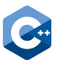

Adv Features
Following sections describe our Advertise Companies Organizational process.
Following sections describe our Advertise Companies Organizational process.
We provide various services for pre-production activities. Please contact us for details.
We provide various services for pre-production activities. Please contact us for details.
We provide various services for pre-production activities. Please contact us for details.
Following sections describe our TV features.
We provide various services for pre-production activities. Please contact us for details.
We provide various services for production activities. Please contact us for details.
Please contact us for details.
Please contact us for details.
Following sections describe our IT languages and technologies features.
JavaScript (JS) is a dynamic computer programming language.[5] It is most commonly used as part of web browsers, whose implementations allow client-side scripts to interact with the user, control the browser, communicate asynchronously, and alter the document content that is displayed.[5] It is also being used in server-side programming, game development and the creation of desktop and mobile applications.
JavaScript is a prototype-based scripting language with dynamic typing and has first-class functions. Its syntax was influenced by C. JavaScript copies many names and naming conventions from Java, but the two languages are otherwise unrelated and have very different semantics. The key design principles within JavaScript are taken from the Self and Scheme programming languages.[6] It is a multi-paradigm language, supporting object-oriented,[7] imperative, and functional[1][8] programming styles.
The application of JavaScript in use outside of web pages—for example, in PDF documents, site-specific browsers, and desktop widgets—is also significant. Newer and faster JavaScript VMs and platforms built upon them (notably Node.js) have also increased the popularity of JavaScript for server-side web applications. On the client side, JavaScript was traditionally implemented as an interpreted language but just-in-time compilation is now performed by recent (post-2012) browsers.
JavaScript was formalized in the ECMAScript language standard and is primarily used as part of a web browser (client-side JavaScript). This enables programmatic access to computational objects within a host environment.
Python is a widely used general-purpose, high-level programming language. It's design philosophy emphasizes code readability, and its syntax allows programmers to express concepts in fewer lines of code than would be possible in languages such as C. The language provides constructs intended to enable clear programs on both a small and large scale.
Python supports multiple programming paradigms, including object-oriented, imperative and functional programming or procedural styles. It features a dynamic type system and automatic memory management and has a large and comprehensive standard library.
Like other dynamic languages, Python is often used as a scripting language, but is also used in a wide range of non-scripting contexts. Using third-party tools, such as Py2exe, or Pyinstaller,Python code can be packaged into standalone executable programs. Python interpreters are available for many operating systems.
CPython, the reference implementation of Python, is free and open source software and has a community-based development model, as do nearly all of its alternative implementations. CPython is managed by the non-profit Python Software Foundation.
 Node.js is a software platform for scalable server-side and networking applications. Node.js applications are written in JavaScript, and can be run within the Node.js runtime on Windows, Mac OS X and Linux with no changes.
Node.js is a software platform for scalable server-side and networking applications. Node.js applications are written in JavaScript, and can be run within the Node.js runtime on Windows, Mac OS X and Linux with no changes.
Node.js applications are designed to maximize throughput and efficiency, using non-blocking I/O and asynchronous events. Node.js applications run single-threaded, although Node.js uses multiple threads for file and network events. Node.js is commonly used for real time applications due to its asynchronous nature.
Node.js internally uses the Google V8 JavaScript engine to execute code, and a large percentage of the basic modules are written in JavaScript. Node.js contains a built-in asynchronous i/o library for file, socket and HTTP communication. The HTTP and socket support allows Node.js to act as a web server without additional web server software such as Apache.
 Java is a computer programming language that is concurrent, class-based, object-oriented, and specifically designed to have as few implementation dependencies as possible. It is intended to let application developers "write once, run anywhere" (WORA), meaning that code that runs on one platform does not need to be recompiled to run on another. Java applications are typically compiled to bytecode (class file) that can run on any Java virtual machine (JVM) regardless of computer architecture. Java is, as of 2014, one of the most popular programming languages in use, particularly for client-server web applications, with a reported 9 million developers. Java was originally developed by James Gosling at Sun Microsystems (which has since merged into Oracle Corporation) and released in 1995 as a core component of Sun Microsystems' Java platform. The language derives much of its syntax from C and C++, but it has fewer low-level facilities than either of them.
Java is a computer programming language that is concurrent, class-based, object-oriented, and specifically designed to have as few implementation dependencies as possible. It is intended to let application developers "write once, run anywhere" (WORA), meaning that code that runs on one platform does not need to be recompiled to run on another. Java applications are typically compiled to bytecode (class file) that can run on any Java virtual machine (JVM) regardless of computer architecture. Java is, as of 2014, one of the most popular programming languages in use, particularly for client-server web applications, with a reported 9 million developers. Java was originally developed by James Gosling at Sun Microsystems (which has since merged into Oracle Corporation) and released in 1995 as a core component of Sun Microsystems' Java platform. The language derives much of its syntax from C and C++, but it has fewer low-level facilities than either of them.
The original and reference implementation Java compilers, virtual machines, and class libraries were developed by Sun from 1991 and first released in 1995. As of May 2007, in compliance with the specifications of the Java Community Process, Sun relicensed most of its Java technologies under the GNU General Public License. Others have also developed alternative implementations of these Sun technologies, such as the GNU Compiler for Java (bytecode compiler), GNU Classpath (standard libraries), and IcedTea-Web (browser plugin for applets).
Objective-C is a general-purpose, object-oriented programming language that adds Smalltalk-style messaging to the C programming language. It is the main programming language used by Apple for the OS X and iOS operating systems and their respective application programming interfaces (APIs), Cocoa and Cocoa Touch.
Originally developed in the early 1980s, it was selected as the main language used by NeXT for its NeXTSTEP operating system, from which OS X and iOS are derived.Generic Objective-C programs that do not use the Cocoa or Cocoa Touch libraries, or using parts that may be ported or reimplemented for other systems can also be compiled for any system supported by GCC or Clang.
Objective-C source code program files usually have .m filename extensions, while Objective-C header files have .h extensions, the same as for C header files.
Digia, Qt (formerly known as Qt Development Frameworks, Qt Software, Trolltech and as Quasar Technologies) is an Oslo, Norway-based software company best known for its Qt toolkit and application framework. Digia, Qt is a subsidiary of Digia.
The company provides software development platforms and frameworks, as well as expert consulting services. Its flagship product is Qt, a multi-platform Graphical User Interface (GUI) framework written in C++. Qt is popular with application developers using C++ but is supported by bindings for other programming languages too, such as Python. Qt also includes packages such as data structures and a networking library. The popular, Free, and cross-platform KDE desktop environment and software compilation uses Trolltech's Qt library. The company also employs several KDE developers.
In 2001 Trolltech introduced Qtopia which is based on Qt. Qtopia is an application platform for Linux-based devices such as mobile phones, portable media players, and home media. It is also used in many non-consumer products such as medical instruments and industrial devices. Qtopia Phone Edition was released in 2004, and their Greenphone smartphone is based on this platform.
The following products exist but commercial support and development has stopped:
C++ (pronounced see plus plus) is a general purpose programming language that is free-form and compiled. It is regarded as an intermediate-level language, as it comprises both high-level and low-level language features.[3] It provides imperative, object-oriented and generic programming features.
C++ is one of the most popular programming languages and is implemented on a wide variety of hardware and operating system platforms. As an efficient performance driven programming language it is used in systems software, application software, device drivers, embedded software, high-performance server and client applications, and entertainment software such as video games. Various entities provide both open source and proprietary C++ compiler software, including the FSF, LLVM, Microsoft and Intel.
It was developed by Bjarne Stroustrup starting in 1979 at Bell Labs, C++ was originally named C with Classes, adding object-oriented features, such as classes, and other enhancements to the C programming language. The language was renamed C++ in 1983, as a pun involving the increment operator. It began as enhancements to C, first adding classes, then virtual functions, operator overloading, multiple inheritance, templates and exception handling, alongside changes to the type system and other features.
C++ is standardised by the International Organization for Standardization (ISO), which the latest (and current) having being ratified and published by ISO in September 2011 as ISO/IEC 14882:2011 (informally known as C++11). The C++ programming language was initially standardised in 1998 as ISO/IEC 14882:1998, which was amended by the 2003 technical corrigendum, ISO/IEC 14882:2003. The current standard (C++11) supersedes these, with new features and an enlarged standard library.
It has influenced many other programming languages, including C#, Java and newer versions of C (C99 and C11).
 Open Computing Language (OpenCL) is a framework for writing programs that execute across heterogeneous platforms consisting of central processing units (CPUs), graphics processing units (GPUs), digital signal processors (DSPs), field-programmable gate arrays (FPGAs) and other processors. OpenCL includes a language (based on C99) for writing kernels (functions that execute on OpenCL devices), plus application programming interfaces (APIs) that are used to define and then control the platforms. OpenCL provides parallel computing using task-based and data-based parallelism. OpenCL is an open standard maintained by the non-profit technology consortium Khronos Group. It has been adopted by Apple, Intel, Qualcomm, Advanced Micro Devices (AMD), Nvidia, Altera, Samsung, Vivante and ARM Holdings.
Open Computing Language (OpenCL) is a framework for writing programs that execute across heterogeneous platforms consisting of central processing units (CPUs), graphics processing units (GPUs), digital signal processors (DSPs), field-programmable gate arrays (FPGAs) and other processors. OpenCL includes a language (based on C99) for writing kernels (functions that execute on OpenCL devices), plus application programming interfaces (APIs) that are used to define and then control the platforms. OpenCL provides parallel computing using task-based and data-based parallelism. OpenCL is an open standard maintained by the non-profit technology consortium Khronos Group. It has been adopted by Apple, Intel, Qualcomm, Advanced Micro Devices (AMD), Nvidia, Altera, Samsung, Vivante and ARM Holdings.
For example, OpenCL can be used to give an application access to a graphics processing unit for non-graphical computing (see general-purpose computing on graphics processing units). Academic researchers have investigated automatically compiling OpenCL programs into application-specific processors running on FPGAs,[1] and commercial FPGA vendors are developing tools to translate OpenCL to run on their FPGA devices.[2][3] OpenCL can also be used as an intermediate language for directives-based programming such as OpenACC.
 WebGL (Web Graphics Library) is a JavaScript API for rendering interactive 3D graphics and 2D graphics within any compatible web browser without the use of plug-ins. WebGL is integrated completely into all the web standards of the browser allowing GPU accelerated usage of physics and image processing and effects as part of the web page canvas. WebGL elements can be mixed with other HTML elements and composited with other parts of the page or page background. WebGL programs consist of control code written in JavaScript and shader code that is executed on a computer's Graphics Processing Unit (GPU). WebGL is designed and maintained by the non-profit Khronos Group.
WebGL (Web Graphics Library) is a JavaScript API for rendering interactive 3D graphics and 2D graphics within any compatible web browser without the use of plug-ins. WebGL is integrated completely into all the web standards of the browser allowing GPU accelerated usage of physics and image processing and effects as part of the web page canvas. WebGL elements can be mixed with other HTML elements and composited with other parts of the page or page background. WebGL programs consist of control code written in JavaScript and shader code that is executed on a computer's Graphics Processing Unit (GPU). WebGL is designed and maintained by the non-profit Khronos Group.
 Android is an operating system based on the Linux kernel, and designed primarily for touchscreen mobile devices such as smartphones and tablet computers. Initially developed by Android, Inc., which Google backed financially and later bought in 2005, Android was unveiled in 2007 along with the founding of the Open Handset Alliance—a consortium of hardware, software, and telecommunication companies devoted to advancing open standards for mobile devices. The first publicly available smartphone running Android, the HTC Dream, was released on October 22, 2008.
Android is an operating system based on the Linux kernel, and designed primarily for touchscreen mobile devices such as smartphones and tablet computers. Initially developed by Android, Inc., which Google backed financially and later bought in 2005, Android was unveiled in 2007 along with the founding of the Open Handset Alliance—a consortium of hardware, software, and telecommunication companies devoted to advancing open standards for mobile devices. The first publicly available smartphone running Android, the HTC Dream, was released on October 22, 2008.
The user interface of Android is based on direct manipulation, using touch inputs that loosely correspond to real-world actions, like swiping, tapping, pinching, and reverse pinching to manipulate on-screen objects. Internal hardware—such as accelerometers, gyroscopes, and proximity sensors—is used by some applications to respond to additional user actions, for example adjusting the screen from portrait to landscape depending on how the device is oriented. Android allows users to customize their home screens with shortcuts to applications and widgets, which allow users to display live content, such as emails and weather information, directly on the home screen. Applications can further send notifications to the user to inform them of relevant information, such as new emails and text messages.
As of 2013, "Android dwarfs any other computing platform" in device shipments, shipping more than Windows and iOS/Mac OS combined.
As of July 2013, Android has the largest number of applications ("apps"), available for download in Google Play store which has had over 1 million apps published, and over 50 billion downloads. A developer survey conducted in April–May 2013 found that Android is the most used platform among developers; it is used by 71% of the mobile developers population.
Android's source code is released by Google under the Apache License 2.0, which allows everyone to freely modify and distribute Android under various names except by reusing the "Android" trademark; however, device manufacturers and wireless carriers have licensed the trademark from Google. Most Android devices ship with a combination of open source and proprietary software. Android is popular with technology companies which require a ready-made, low-cost and customizable operating system for high-tech devices. Despite being primarily designed for phones and tablets, it also has been used in televisions, games consoles, digital cameras, and other electronics. Android's open nature has encouraged a large community of developers and enthusiasts to use the open-source code as a foundation for community-driven projects, which add new features for advanced users or bring Android to devices which were officially released running other operating systems.
As of May 2012, Android became the most popular mobile OS, having the largest installed base, and is a market leader in most countries[22] including the United States; there it has had the highest installed base of mobile phones for years.[23] In the third quarter of 2013, Android's share of the global smartphone shipment market—led by Samsung products—was 81.3%, the highest ever. In most markets Android-powered phones are the most popular comprising more than half of the overall smartphone sales, including the United States market starting with the September–November 2013 period. The operating system's success has made it a target for patent litigation as part of the so-called "smartphone wars" between technology companies.[28][29] As of September 2013, one billion Android devices have been activated.
 CUDA (Compute Unified Device Architecture) is a parallel computing platform and programming model created by NVIDIA and implemented by the graphics processing units (GPUs) that they produce. CUDA gives program developers direct access to the virtual instruction set and memory of the parallel computational elements in CUDA GPUs.
CUDA (Compute Unified Device Architecture) is a parallel computing platform and programming model created by NVIDIA and implemented by the graphics processing units (GPUs) that they produce. CUDA gives program developers direct access to the virtual instruction set and memory of the parallel computational elements in CUDA GPUs.
Using CUDA, the GPUs can be used for general purpose processing (i.e., not exclusively graphics); this approach is known as GPGPU. Unlike CPUs, however, GPUs have a parallel throughput architecture that emphasizes executing many concurrent threads slowly, rather than executing a single thread very quickly.
The CUDA platform is accessible to software developers through CUDA-accelerated libraries, compiler directives (such as OpenACC), and extensions to industry-standard programming languages, including C, C++ and Fortran. C/C++ programmers use 'CUDA C/C++', compiled with "nvcc", NVIDIA's LLVM-based C/C++ compiler, and Fortran programmers can use 'CUDA Fortran', compiled with the PGI CUDA Fortran compiler from The Portland Group.
In addition to libraries, compiler directives, CUDA C/C++ and CUDA Fortran, the CUDA platform supports other computational interfaces, including the Khronos Group's OpenCL,[3] Microsoft's DirectCompute, and C++ AMP.[4] Third party wrappers are also available for Python, Perl, Fortran, Java, Ruby, Lua, Haskell, MATLAB, IDL, and native support in Mathematica.
In the computer game industry, GPUs are used not only for graphics rendering but also in game physics calculations (physical effects like debris, smoke, fire, fluids); examples include PhysX and Bullet. CUDA has also been used to accelerate non-graphical applications in computational biology, cryptography and other fields by an order of magnitude or more.
CUDA provides both a low level API and a higher level API. The initial CUDA SDK was made public on 15 February 2007, for Microsoft Windows and Linux. Mac OS X support was later added in version 2.0,[10] which supersedes the beta released February 14, 2008.[11] CUDA works with all Nvidia GPUs from the G8x series onwards, including GeForce, Quadro and the Tesla line. CUDA is compatible with most standard operating systems. Nvidia states that programs developed for the G8x series will also work without modification on all future Nvidia video cards, due to binary compatibility
Google App Engine (often referred to as GAE or simply App Engine) is a platform as a service (PaaS) cloud computing platform for developing and hosting web applications in Google-managed data centers. Applications are sandboxed and run across multiple servers. App Engine offers automatic scaling for web applications—as the number of requests increases for an application, App Engine automatically allocates more resources for the web application to handle the additional demand.
Google App Engine is free up to a certain level of consumed resources. Fees are charged for additional storage, bandwidth, or instance hours required by the application. It was first released as a preview version in April 2008, and came out of preview in September 2011.
Apache Cassandra is an open source distributed database management system designed to handle large amounts of data across many commodity servers, providing high availability with no single point of failure. Cassandra offers robust support for clusters spanning multiple datacenters, with asynchronous masterless replication allowing low latency operations for all clients.
Cassandra also places a high value on performance. In 2012, University of Toronto researchers studying NoSQL systems concluded that "In terms of scalability, there is a clear winner throughout our experiments. Cassandra achieves the highest throughput for the maximum number of nodes in all experiments."
Cassandra's data model is a partitioned row store with tunable consistency. Rows are organized into tables; the first component of a table's primary key is the partition key; within a partition, rows are clustered by the remaining columns of the key. Other columns may be indexed separately from the primary key.
Tables may be created, dropped, and altered at runtime without blocking updates and queries.
Cassandra does not support joins or subqueries, except for batch analysis via Hadoop. Rather, Cassandra emphasizes denormalization through features like collections.
Haskell /ˈhæskəl/ is a standardized, general-purpose purely functional programming language, with non-strict semantics and strong static typing. It is named after logician Haskell Curry. In Haskell, "a function is a first-class citizen" of the programming language.[22] As a functional programming language, the primary control construct is the function.
.NET Framework (pronounced dot net) is a software framework developed by Microsoft that runs primarily on Microsoft Windows. It includes a large library and provides language interoperability (each language can use code written in other languages) across several programming languages. Programs written for .NET Framework execute in a software environment (as contrasted to hardware environment), known as the Common Language Runtime (CLR), an application virtual machine that provides services such as security, memory management, and exception handling. The class library and the CLR together constitute .NET Framework.
.NET Framework's Framework Class Library provides user interface, data access, database connectivity, cryptography, web application development, numeric algorithms, and network communications. Programmers produce software by combining their own source code with .NET Framework and other libraries. .NET Framework is intended to be used by most new applications created for the Windows platform. Microsoft also produces an integrated development environment largely for .NET software called Visual Studio.
MongoDB (from "humongous") is a cross-platform document-oriented database system. Classified as a NoSQL database, MongoDB eschews the traditional table-based relational database structure in favor of JSON-like documents with dynamic schemas (MongoDB calls the format BSON), making the integration of data in certain types of applications easier and faster. Released under a combination of the GNU Affero General Public License and the Apache License, MongoDB is free and open-source software.
First developed by the software company 10gen (now MongoDB Inc.) in October 2007 as a component of a planned platform as a service product, the company shifted to an open source development model in 2009, with 10gen offering commercial support and other services. Since then, MongoDB has been adopted as backend software by a number of major websites and services, including Craigslist, eBay, Foursquare, SourceForge, and the New York Times, among others. MongoDB is the most popular NoSQL database system.
We are work under CMM process.
We are work under CMM process.